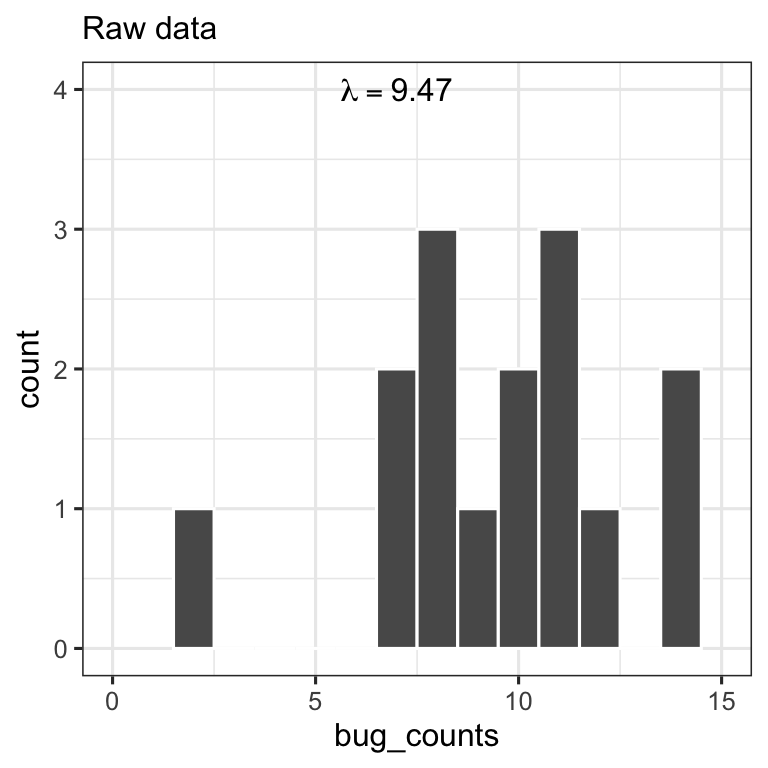
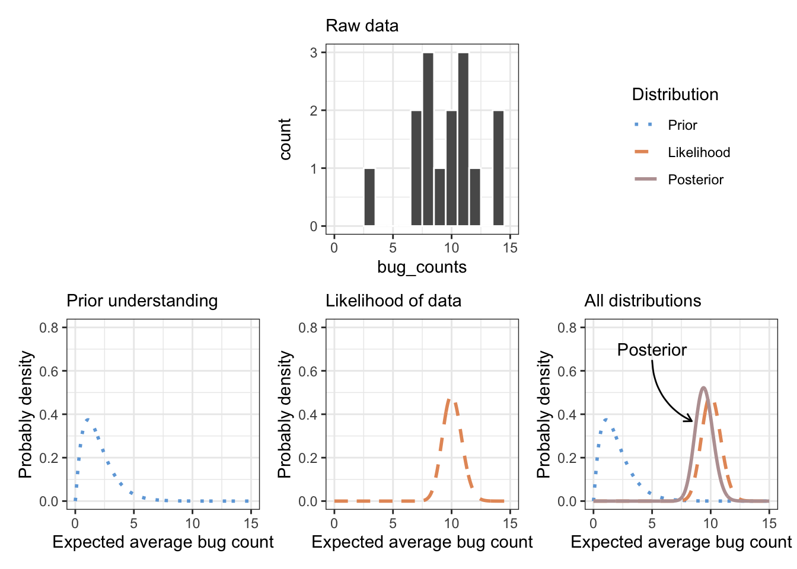

1 Thinking about thinking about concepts
“…in which we build our metacognition.”
1.1 Goals
In this chapter, you will,
- Understand and explain six concepts and practices that are fundamental to science.
- Apply each concept to your daily life.
1.2 Introduction
How do we think?
Thinking clearly is the most critical skill in all of Science. While we understand elements of how to do this, we are a long way off from really understanding how the brain works. In the meantime, let’s focus on tools that humanity has found to be very useful in thinking clearly.
- Observation
- Learning (Bayesian updating)
- Logic
- Mathematics
- Causal inference
These ideas and tools all help us think more clearly about whatever we’re interested in.
In addition to the metacognitive activities and tools, we’ll also describe some cross-cutting concepts that apply to all fields of study. By considering these concepts in what we do, in are field of research, we can view our own research more broadly and poossibly connect it more easily to other research areas. There concepts are,
- Scale
- Hierarchy
- Emergence
- Complexity
These help us place our own relatively narrow research focus into a broader realm of ideas, by seeing how it is constrained in space and time (scale), what its is made up of and what small role it plays in a bigger entity (hierarchy), how it is more than the sum of its parts (emergence and complexity).
Let us begin by considering the following tools of the human mind.
1.3 Observation
Observing the world around us is the most fundamental process of science. Period.
The goal of science is to describe and explain the natural or material world. The true test of whether we can do that is to compare our understanding of the world to the world itself. Science makes great strides when we invent technology to observe the world in new ways: microscopes and teloscopes, sequencers and environmenal DNA, binoculars and satellites, particle accelerators and LIGO.
Science also makes great strides when our theory helps us see new things that have always been right in front of us, in new ways.
1.3.0.1 For you to do
Of the thousands of small observations you made today, describe one of them here, in your own handwriting:
1.4 Learning, or Bayesian Updating
All organisms have systems for learning.
Learning consists of i. having a pre-existing set of behaviors or thoughts, ii. encountering new situations or information, and iii. updating our sets of behaviors or thoughts.
This sequence of prior knowledge -> new observation -> updated knowledge appears to be fundamental to learning. Mathematicians have formalized it to use in all kinds of ways, perhaps most notably as Bayesian epistemology and statistics.
1.4.1 Four Examples of Bayesian Reasoning
Consider a toddler learning to walk, or a child learning to ride a bicycle. Our nervous systems and muscles have a prior knowledge of how to keep us upright. We encounter or observe or sense a new situation (being vertical, on our feet or on skinny bicycle tires), and our nervous system and muscles update their behaviors to keep us upright.
When I was very young, my parents led me to think there was a person called Santa Claus who delivered presents all around the world every December. This constituted my prior knowledge when I was young. As I grew older, I made increasingly sophisticated observations around gift giving, and updated my knowledge about Santa Claus such that I now believe that it is very, very unlikely that Santa Claus exists.
Every October at the beginning of the NHL hockey season, I believe that my favorite NHL hockey team (the Pittsburgh Penguins) has a good chance to get to the Stanley Cup final (the professional league championship). My prior belief is that the team has a particular level of talent. As the season progresses and I watch the team play against other teams, I gather more knowledge about the actual level of talent. I update my belief each night when I see them and other teams play. Following each game, I have a new, updated, belief regarding the team’s probability of making it to the championship.
Consider climate change. In the early 1800s, Alexander von Humboldt argued that human development was leading to changes in climate (Wulf 2015, Humboldt’s legacy. Nat Ecol Evol 3, 1265–1266 (2019). https://doi.org/10.1038/s41559-019-0980-5). In 1896, chemist Svante Arrhenius showed that CO2 in the atmosphere probably contributed to global cycles of glaciation and that fossil fuel combustion by humans would likely cause global warming. In 1980s, scientists at Exxon showed with very high confidence, in secret Exxon documents, that burning fossil fuels would increase average global temperatures. In 1988, NASA scientist Dr. James Hansen testified before the U.S. Congress regarding the high probability of severe climate change due to human activity. Since then, thousands of research studies have documented details supporting predictions of a warming climate. Scientists have updated their prior knowledge in the face of new observations.
To conceptualize these examples, we will state:
prior understanding + new observations => updated understanding.
Write down a brief example where you learn something. Identify your prior knowledge, the new information or data, and your updated understanding or ability.
In all of these situations, we use new observations to update our prior knowledge to create new understanding. This is how we learn.
1.4.1.1 Formal Bayesian reasoning
We use Bayesian statistics to do this formally. We,
- express our prior beliefs in the form of a mathematical probability distribution; we refer to this our the prior probabilities.
- make new observations and express these using a probability distribution, and
- update our knowledge by combining these probability distributions, and obtain a new probability distribution that we refer to as our posterior probability distribution.
It boils down to this:
Statistics
Prior distribution x new data => posterior distribution

1.4.2 Three important notes
First, uncertainty is part of learning. Sometimes more data causes us to realize we know less than we thought; sometimes it allows us to be more certain. When I first believed in Santa Claus, I was completely certain in my belief that there was a Santa Claus. As I began to gather more data, I became less certain, but I still thought Santa Claus probably existed. Now, I have accumulated sufficient evidence that I am quite certain — I have reduced my certainty — regarding the existence of Santa Claus.
Second, we refer to strength of evidence or our degree of rational belief as credence. Credence our degree of belief about something, as in “don’t give any credence to that gossip.” In this book, and elsewhere, we use credence in both an informal sense, and a formal quantitative sense.
Third, Bayesian epistemology views certainty, probability, and credence as subjective probabilities. Each of us comes to new observations with different prior knowledge, and so new data has a different effect on each of our beliefs. For most intents and purposes, we can all agree that a flipped coin lands heads-up about 50% of the time, not merely because it is an objective fact, but rather because we all have extensive observations with coins and with the logic of a hypothetical fair coin. We have updated any prior beliefs with so much data that we have come to a similar belief about flipped coins.
1.4.2.1 For you to do
Write down one example of Bayesian learning that you did. Identify your prior knowledge, the new observations you made, and how it altered your expectation or your level of credence or certainty regarding that expectation.
1.5 Logic
We use logic all the time, and sometimes we forego it. In science, we often use intuition to get started, but must be logical in the end.
Here we’ll just mention three types of logic we encounter and use routinely in science.
1.5.1 Deduction
Deductive arguments can be valid or invalid, and have conclusions that are true or false. Here we describe the most common form, a categorical syllogism. A categorical syllogism has a major proposition, a minor proposition, and a conclusion:
Major proposition 1: If P, then Q Minor proposition 2: P Conclusion: Therefore, Q
1.5.1.1 Three contrasting examples
Valid argument and true conclusion. The conclusion is true because the argument is valid and the propositions are true.
- All women are mortal (True; If a person is a woman, then she is mortal)
- E. Lucy Braun was a woman (True)
- Therefore, E. Lucy Braun was mortal (True)
Valid argument, false conclusion. The conclusion is false because the argument is valid, but one of more of the propositions is false.
All women are immortal (False) E. Lucy Braun was a woman (True) Therefore, E. Lucy Braun was immortal (False)
Invalid argument. Note that all that statements are true, but the conclusion is not supported by the argument.
All women are mortal (True) My cat’s name is Dahlia (True) Therefore, Dahlia is mortal (True but not supported by these premises)
1.5.2 Induction
Inductive arguments are arguments of extrapolation from examples. They are not technically valid, but as you will see, they are useful if used carefully.
All the swans that I have ever seen are white. Therefore, all swans are white.
The sun has always risen in the east every morning. Therefore, the sun always will rise in the east each morning.
In my survey of University students, 86% said they liked ice cream. Therefore, 86% of all University students like ice cream.
All of the above express their conclusions with complete certainty which is unwarranted, given the preceding observations.
In science, we rely on induction all the time to help guide us in the right direction, but unlike the examples above, we introduce uncertainty.
Many plants produce nectar on its leaves to attract ants and the ants protect the plants from herbivores. Therefore, this partridge pea that produces nectar on its leaves seems likely to be defended by ants.
Past El Niño events have tended to precede spikes in global average air temperature. Therefore, the 2026-2027 El Niño seems more likely than not to cause temperature to spike in 2027.
1.5.3 Abduction
Abduction is less frequently mentioned in introductory logic, but it is how we do science. It is the process of seeking the most likely and simplest explanation, given a set of observations. Abduction is quite flexible, and so formal abstractions are more complicated and numerous.
In abduction, we often argue backwards, in an invalid argument, referred to as affirming the consequent:
This morning my driveway is wet. I know that when it rains at night, my driveway is wet in the morning. Therefore, perhaps it rained last night.
- If rain then wet
- Wet
- Therefore, rain
Note that other events could have made my driveway wet - perhaps I forgot the sprinkler was on, or my son empty his ice chest in my driveway. We have to be very cautious if we choose to try to make conclusions that way.
In useful abduction, we use multiple lines of evidence. Did I leave the sprinkler on last night? What does my son say? Were other driveways or the street wet?
Here is another example, about the effect of El Niño on global average surface temperature.
Pattern: The El Niño–Southern Oscillation (ENSO) is a gigantic atmospheric and southern Pacific Ocean circulation pattern that swings back and forth across the southern Pacific a little like a bathtub, resulting from and causing changes in the distribution of heat in the ocean and atmospher. The El Niño phase occurs on a somewhat unpredictable cycle of 4-10 years. It causes big weather changes across the global, resulting droughts in some places and torrential rains and floods in other places around the globe.
Mechanism: El Niño events prevent cold water from welling up to the surface along the coast of South America in the eastern Pacific, and keep warm water on the surface in the western Pacific. This seems likely to warm surface air more than non-El Niño conditions. Observations: Past El Niño events have tended to precede spikes in global average air temperature. Tentative conclusion: Given the observations and a plausible mechanism, it seems very plausible that the 2026-2027 El Niño will cause temperature to spike in 2026-2027.
In this section, we’ve introduced these forms of logic (deduction, induction, abduction) to help you improve your metacognition, to become more aware of your thinking. Your goal should be to become more expert at using evidence to help you make sense of the world.
1.5.3.1 For you to do
Write out an informal argument that you have made today. Maybe it concerned where you should have breakfast, or maybe to help you make a prediction in your own research. Regardless, write your argument below, and identify its type and structure.
1.6 Mathematics
Mathematics is an unreasonably useful tool for describing and explaining nature. It requires us to be unambiguous and precise, but rewards us with indisputable logic. A famous statistician (G. E. P. Box) said that all models are wrong, but some are useful; it was his humble way of saying that models are gross abstraction that can nonetheless reveal partial truths that are otherwise hidden.
Throughout this book, you will use mathematical models and statistical models to help you understand the logic of your biological assumptions and to make predictions about the future.
1.7 Causal Inference
Causal inference is a specific area of formal logic and mathematics that helps us make sense of networks of relationships. It provides a set of tools that we should be aware of. It allows us to convert words into simple pictures (network graphs) that we can analyze formally. We can use it to help us figure out how to design experiments and analyze data in valid ways.
Consider my wet driveway:
Rain -> Driveway <- Sprinkler;
This graph tells me that rain can affect my driveway (get it wet) and an independent event, my sprinkler (which I use to water the adjacent garden) can also affect my driveway. However, in this graph, the rain and my sprinkler are independent - they don’t affect each other. Note also the direction of the arrows. The direction represents cause or a causal effect. Rain causes my driveway to get wet, but my driveway does not cause the sky to release rain.
Let’s look at another example, in which ice cream sales are associated with drowning deaths. In this case, imagine a conspiracy theorist arguing that because people are buying (and eating) more ice cream, they are more at risk of drowning if they at e too much ice cream. But let’s look at the causal graph.
Ice cream sales <- Heat -> Drowning deaths
It is merely that summer time heat is leading people to buy (and eat) more ice cream. It is also encouraging more people to spend more time around water, and this increased time around water leads to more drowning deaths by chance alone.
Let’s look at one more example, this time a chain of causes. Rising CO\(_2\) levels leads to more summer heat extremes and more summer heat extremes leads to higher mortality.
CO2 -> extreme atmospheric heat -> heat-related mortality
Note the CO\(_2\) does not directly cause people to die. They are not suffocating. In this graph, CO2 has a direct causal effect on temperatures and temperature has a direct causal effect on people.
The above graphs are the foundation of causal inference. They all are made of variables and arrows, sometimes referred to as vertices and edges (think geometry). In addition they do not have any loops or cycles; if you follow the arrows along any path, it always comes to an end. These graphs are called directed acyclic graphs (DAGs). They have causal direction (arrows), and they contain no loops or cycles (acyclic).
They come in three flavors: Collider: two separate variables affect a third. Fork: one variable affects two others. Chain: a cascade where one variable affects a second, which affects a third.
A collider is a variable in the middle that has arrows only pointed into it from two other variables, and no arrows leaving. A fork has a variable in the middle with arrows leading only to two other variables. A chain is a linear path from one variable, into the central variable, and then from the central variable to the third variable.
Think about about these in an ecological context. With a collider, there are two potential causes for something to happen, so we have to consider multiple possibilities. With fork, two variables can appear correlated even when they don’t actually affect each other - they simply share a common cause. With a chain, we have both direct and indirect causes for some phenomenon.
Now consider this graph:
Rain -> Driveway <- Sprinkler; Rain -> Sprinkler.
Once again, the rain and the sprinkler can make my driveway wet. However, now the rain affects the sprinkler. How? Because I am less likely to turn on the sprinkler if it rains. Now the rain and sprinkler are no longer independent; the behavior of the sprinkler depends on the rain.
Within this graph, we have one collider, one fork, and one chain. Identify them now.
Draw and explain a causal graph or DAG of something in your life. Remember, it needs to be directed (with causes) and acyclic (no loops or cycles).
1.8 Emergence
In ecology, everything we study is made up of smaller things; they emerge from the combination and interaction of smaller often faster things. Ecological communities are made of interacting populations, and of course those populations are made of interacting individuals. All things we study emerge from the interaction of simpler things.
The same is true for the rest of biology, chemistry, geology, and almost every other discipline. The only features of our world that are so fundamental that they are not made of anything else is the quantum wave function of the Universe. Everything else emerges at higher levels of organization.
Within biology, we are fond of describing levels of organization, from components to the whole, like this (cf. Scheiner 2010):
Biosphere <-> landscapes <-> ecosystems <-> metacommunities <-> communities populations interacting individuals, individuals, organ systems, organs, tissues, cells, organelles, molecules, atoms.
At each level, there are both physical and biological elements. For instance, blood is a tissue where the cells are floating in an aqueous medium. Take away the medium, and you no longer have blood. An ecosystem is made of organisms and the elements we track from pool to pool.
An entity at each level that has properties that we can study. I can study the dynamics of a population of coneflowers without studying the organs, tissues, and cells that make up an individual coneflower. I can study nutrient cycling from a watershed to a lake without studying individual fish or bacterial cells that live in that system. Each level of organization has properties that emerge — emergent properties — that show persistence and respond to causal forces.
1.8.1 Interactions of emergent properties
To understand why an entity behaves as it does, we often study its pieces at some level or levels below. To understanding the cause of a blood disease, we are likely to study sickle cell anemia, we might study just the red blood cells and the genetic basis form that sickle shape. To understand why one lake is eutrophic and filled with algae while another is not, we are likely to study the one of two nutrients in that lake rather than simply study a group of lakes. To find out why, we typically examine subsystems to get to the cause.
Sickle cell anemia causation: Genes -> cell shape -> tissue -> individual
Lake algal blooms: phosphorus -> algae cells -> algal population -> lake condition
In contrast, we sometimes find a cause occurs at a hierarchical level above our entity of interest. Perhaps our skin problem is sunburn, caused by the behavior of the entire individual. Perhaps our desert shrubland is overtaken with Eurasian native cheatgrass (Bromis tectorum) because this species that evolved in a different biogeographic region in a different landscape was brought in by people, and it has left behind its usual controls.
Sunburn: Clear sky -> skin damage
Cheatgrass invasion: Biogeography + Human-mediated dispersal -> cheatgrass invasion
By now you may be thinking that emergent properties interact across many levels. Let’s use a causal graph (DAG) to make those connections.
Lake algal blooms: Landscape/watershed surrounding the lake -> human behavior -> phosphorus on land -> phosphorus in water -> algal cells -> algae population -> lake condition
Cheatgrass invasion: Biogeography + Human-mediated dispersal -> cheatgrass invasion <- community dynamics <- cheatgrass population <- individual (cheatgrass traits); community dynamics <- populations of other species <- traits of those individuals
1.9 Review
As you work through the content in this book, keep in mind these fundamental processes we describe very briefly above: Observation, Learning (Bayesian updating), Logic, Mathematics, Causal inference, Emergence
Test yourself. What can you remember about each of these topics?
1.10 Cross-cutting concepts
1.10.1 Scale
1.10.2 Hierarchy
1.10.3 Emergence and complexity
Reductionism vs. compression.